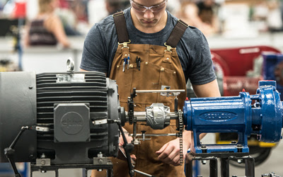
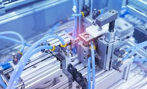

Capacitación Técnica para la Industria
Programas de formación técnica orientados al desarrollo de competencias en electricidad, automatización y mantenimiento industrial.
Capacitación técnica aplicada a la industria
Las capacitaciones están diseñadas para fortalecer las competencias técnicas del personal de planta integrando conocimientos teóricos y prácticos aplicados directamente a los sistemas de trabajo de cada empresa.
Catálogo de Capacitaciones
Capacitaciones Fundamentales
Formación técnica básica para personal que trabaja con sistemas eléctricos y electromecánicos.

Capacitaciones Transversales
Conocimientos aplicables a distintos sectores de la planta industrial.

Capacitaciones Especiales
Tecnologías específicas utilizadas en procesos industriales modernos.
Sectores industriales a los que se dirige la capacitación
Industria Yerbatera
Procesos de secado, molienda, transporte y control eléctrico de planta.
Industria Maderera
Sistemas eléctricos y mantenimiento en aserraderos y plantas de procesamiento.
Industria del Té
Procesos industriales de secado, transporte y automatización.
Agroindustria
Capacitación técnica aplicada a diferentes procesos productivos.
Modalidad de Capacitación
Diagnóstico
Se analizan las necesidades técnicas de la empresa y del personal.
Capacitación In Company
Las capacitaciones se realizan directamente en la planta.
Aplicación Práctica
Los contenidos se aplican sobre equipos y procesos reales.
Mejora Operativa
Se fortalecen las competencias técnicas del personal.